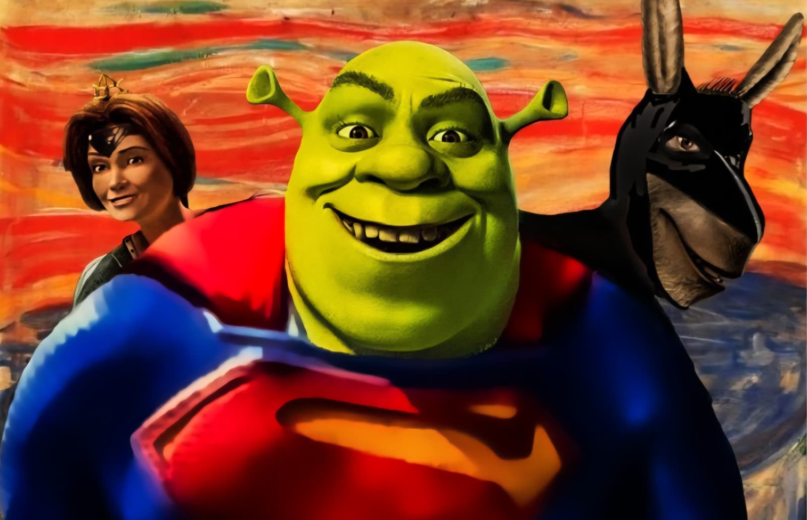
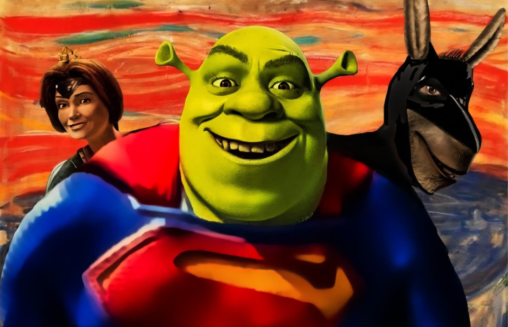

Meme Mashup
Meme-style images created in Photoshop using Quick Masking and Layering techniques, carefully combining elements from multiple sources to create humorous, visually striking, and unexpected compositions. These techniques allow for precise editing, seamless blending, and the manipulation of individual components to convey new ideas or narratives that are entirely different from the original images. The resulting visuals not only entertain but also provide commentary, irony, or satire, demonstrating how digital tools can transform simple images into complex, meaningful, and engaging artwork.
 
